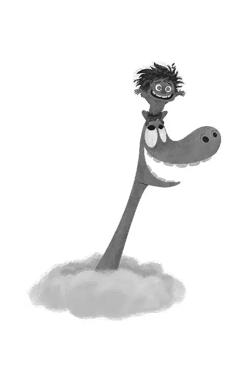

As the sun broke over the horizon, the light dusting of snow sparkled against the ground. Ever faithful, the T-rexes, Arlo, and Spot herded the longhorns on.
Arlo and Spot followed, helping to drive the herd from behind. When Butch noticed the herd splitting off on one side, he called to Arlo for help: “Hey kid, head ’em off before those longhorns split!”
Arlo looked back at Spot and confidently nodded. Then the two of them ran ahead of the longhorns that were breaking away and stood directly in their path. The longhorns raced toward them at full speed. But the brave friends held their ground as the longhorns closed the gap between them. Arlo whipped his tail against the ground, whacking it again and again. He even roared at them, forcing the longhorns to head the other way. It worked! The longhorns were so startled, that they joined the rest of the herd and were back on track.
Arlo and Spot continued to chase them, making sure they stayed with the main herd. Spot panted with excitement and Arlo smiled. It felt good to help, and to feel like part of a team.
Butch passed by, giving them a chuckle and nod as he rode. He was impressed.
Once they made it over a slope and through the distant ridges, Arlo could make out the snow-capped peaks of Clawtooth Mountain. He felt a rush of excitement. “There’s home!” he exclaimed.
“Whooeee!” yelped Nash.
“Wahoo!” shouted Ramsey.
The T-rexes had to move and drive the herd down south, so it was time to say goodbye.
“You hurry on back to your Momma, and don’t stop for nothin,” said Ramsey.
Arlo thanked them. “I sure appreciate you lookin’ out for me,” he added.
But before Arlo and Spot headed toward the pass, Butch gave Arlo some parting words. “You’ll be alright. You’re one tough kid.”
Arlo smiled. That meant a lot coming from Butch. The T-rexes continued on with the herd, while Arlo and Spot headed toward the pass.
As Arlo and Spot continued their journey alongside the river, Arlo felt like he was walking on air. Knowing he was close to home made him feel so happy. He felt a surge of energy and excitement. He and Spot began running and jumping, playing and laughing on their way.
Then Arlo saw a flock of wild birds pecking around in the distance and ran toward them. Spot jumped up on Arlo’s back and climbed to the top of his head. Spot’s tongue hung out happily and waved in the wind as they galloped toward the flock, picking up speed. Once they reached them, the birds scattered, surrounding them, flapping their wings and then taking to the sky.
Spot howled with delight, “Arooowah!”
Arlo joined in, howling back at him as he jumped over boulders and swerved past trees.
Eventually they reached a rocky hilltop and Arlo continued to jump across the rough terrain. He tossed Spot way up into the clouds and Spot caught a glimpse of the sun. Arlo laughed as Spot cheered; he was loving every minute. He signaled to Arlo, to toss him up again and again.
When they got to the top of a peak, Arlo sat Spot on his head and peeked through the clouds. The two watched the sunset together. It was spectacular.
“Wow,” said Arlo. The friends looked at each other and smiled, sharing a moment of complete joy.
